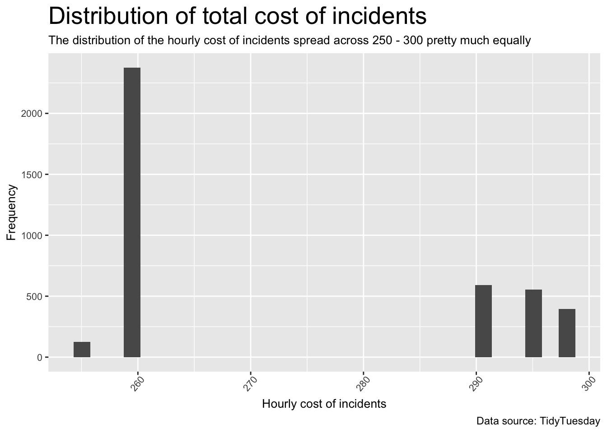

library(tidyverse)
library(dplyr)
library(lubridate)
library(ggplot2)Example Analysis
Backgroud
Question
How is the total cost of incidents for different species and different service types change across time?
Intended audience
People who are interested in the cost of incidents for animal rescue.
Data Origin
The origin of the data comes from TidyTuesday. Specifically, we will use the following data from June, 2021.
Tidy Tuesday provides interesting date sets every Tuesday. (https://github.com/rfordatascience/tidytuesday)
Data Description
Here is a data dictionary for what all the column names mean:
https://github.com/rfordatascience/tidytuesday/blob/master/data/2021/2021-06-29/readme.md#animal_rescuescsv
Fox in bedroom, dog trapped in wall. The London Fire Brigade responds to hundreds of requests to rescue animals each year. Its monthly-updated spreadsheet of such events goes back to 2009; it lists the location and type of property, the kind of animal and rescue, hours spent, a (very) brief description, and more. (Management 2009-2020)
Data wrangling
I used tidyverse(Wickham et al. 2019), dplyr(Wickham et al. 2022), lubridate(Grolemund and Wickham 2011) to wrangle the data.
tuesdata <- tidytuesdayR::tt_load('2021-06-29')
Downloading file 1 of 1: `animal_rescues.csv`tuesdata <- tidytuesdayR::tt_load(2021, week = 27)
Downloading file 1 of 1: `animal_rescues.csv`animal_rescues <- tuesdata$animal_rescues
data <- animal_rescues %>%
drop_na() %>%
mutate(hour = factor(hour(dmy_hm(date_time_of_call)))) %>%
separate(animal_group_parent, c("animal_group", "other"), "-") %>%
filter(incident_notional_cost != "NULL") %>%
mutate(incident_notional_cost = as.numeric(incident_notional_cost)) %>%
select(date_time_of_call, cal_year, pump_hours_total,
hourly_notional_cost, incident_notional_cost,
animal_group, special_service_type_category, hour) removed all NAs
used date operation to seperate hours of rescue from the time
seperated a column of strings by “-”
filtered out NULL incident total cost
select wanted columns
Data visulization
Distribution of cost with Histogram
We first show the distribution of total and hourly cost of incidents with histograms.
data %>%
ggplot(aes(incident_notional_cost)) +
geom_histogram() +
labs(title = "Distribution of total cost of incidents",
subtitle = "Most of total cost of incidents gathered 200 - 300 \nbut the maximized total cost reached 3480",
caption = "Data source: TidyTuesday") +
labs(x = "Total cost of incidents",
y = "Frequency") +
theme(plot.title = element_text(size = 20),
plot.subtitle = element_text(size = 10),
axis.title = element_text(size = 10),
axis.text.x = element_text(size = 8, angle = 50, hjust = 0.8),
axis.text.y = element_text(size = 8))`stat_bin()` using `bins = 30`. Pick better value with `binwidth`.data %>%
ggplot(aes(hourly_notional_cost)) +
geom_histogram() +
labs(title = "Distribution of total cost of incidents",
subtitle = "The distribution of the hourly cost of incidents spread across 250 - 300 pretty much equally",
caption = "Data source: TidyTuesday") +
labs(x = "Hourly cost of incidents",
y = "Frequency") +
theme(plot.title = element_text(size = 20),
plot.subtitle = element_text(size = 10),
axis.title = element_text(size = 10),
axis.text.x = element_text(size = 8, angle = 50, hjust = 0.8),
axis.text.y = element_text(size = 8))`stat_bin()` using `bins = 30`. Pick better value with `binwidth`.
Cost over time with point plots
We then show the trend of total and hourly cost of incidents over time with scatter plots.
data %>%
ggplot(aes(x = cal_year, y = incident_notional_cost)) +
geom_point() +
labs(title = "Total cost of incidents over time (2009 - 2015)",
subtitle = "The total cost of incidents remains pretty much the same across time with a bit rise",
caption = "Data source: TidyTuesday") +
labs(x = "Time (Year)",
y = "Total cost of incidents") +
theme(plot.title = element_text(size = 20),
plot.subtitle = element_text(size = 10),
axis.title = element_text(size = 10),
axis.text.x = element_text(size = 8, angle = 50, hjust = 0.8),
axis.text.y = element_text(size = 8))data %>%
ggplot(aes(x = cal_year, y = hourly_notional_cost)) +
geom_point() +
labs(title = "Hourly cost of incidents over time (2009 - 2015)",
subtitle = "The hourly cost of incidents has a significant rise across time, \nconsidering the stable total cost of incidents, \nanimal rescue is more efficient across time",
caption = "Data source: TidyTuesday") +
labs(x = "Time (Year)",
y = "Hourly cost of incidents") +
theme(plot.title = element_text(size = 20),
plot.subtitle = element_text(size = 10),
axis.title = element_text(size = 10),
axis.text.x = element_text(size = 8, angle = 50, hjust = 0.8),
axis.text.y = element_text(size = 8))
Cost over different time of the day with box plots
We will show the trend of total and hourly cost of incidents over different time of the day with box plots, categorized by special service type.
data %>%
ggplot(aes(x = hour, y = incident_notional_cost)) +
geom_boxplot() +
facet_wrap(~ special_service_type_category) +
labs(title = "Total cost of incidents over different time of the day",
subtitle = "The total cost of incidents is the highest in the morning for animal rescued from below groud and animal rescued from water",
caption = "Data source: TidyTuesday") +
labs(x = "Time (Hour)",
y = "Total cost of incidents") +
theme(plot.title = element_text(size = 20),
plot.subtitle = element_text(size = 10),
axis.title = element_text(size = 10),
axis.text.x = element_text(size = 8, angle = 50, hjust = 0.8),
axis.text.y = element_text(size = 8))data %>%
ggplot(aes(x = hour, y = hourly_notional_cost)) +
geom_boxplot() +
facet_wrap(~ special_service_type_category) +
labs(title = "Hourly cost of incidents over different time of the day",
subtitle = "The hourly cost of incidents remains basically the same across different time of the dat",
caption = "Data source: TidyTuesday") +
labs(x = "Time (Hour)",
y = "Hourly cost of incidents") +
theme(plot.title = element_text(size = 20),
plot.subtitle = element_text(size = 10),
axis.title = element_text(size = 10),
axis.text.x = element_text(size = 8, angle = 50, hjust = 0.8),
axis.text.y = element_text(size = 8))Function Used
dplyr |
tidyr |
ggplot2 |
|---|---|---|
mutate() |
drop_na() |
geom_histogram() |
select() |
seperate() |
geom_boxplot() |
filter() |
geom_point() |
References
Grolemund, Garrett, and Hadley Wickham. 2011. “Dates and Times Made Easy with lubridate.” Journal of Statistical Software 40 (3): 1–25. https://www.jstatsoft.org/v40/i03/.
Management, LFB Information. 2009-2020. Animal Rescue Incidents Attended by LFB. https://data.london.gov.uk/dataset/animal-rescue-incidents-attended-by-lfb.
Wickham, Hadley, Mara Averick, Jennifer Bryan, Winston Chang, Lucy D’Agostino McGowan, Romain François, Garrett Grolemund, et al. 2019. “Welcome to the tidyverse.” Journal of Open Source Software 4 (43): 1686. https://doi.org/10.21105/joss.01686.
Wickham, Hadley, Romain François, Lionel Henry, and Kirill Müller. 2022. Dplyr: A Grammar of Data Manipulation.